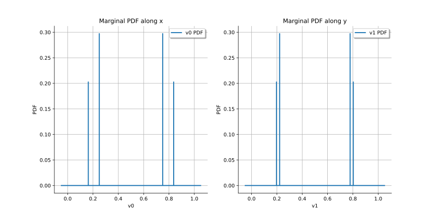

Note
Go to the end to download the full example code.
Build a sparse quadrature rule with the Gauss-LP algorithm¶
Description¶
We build a quadrature rule integrating a finite set of scalar functions exactly against a measure. The number of nodes is an output of the algorithm: it is at most the number of functions and is often much smaller than the number of nodes of a tensorized rule with the same exactness.
The GaussLPQuadrature class builds such a
rule. It takes the functions whose moments must be reproduced and the
integration measure. The functions do not need to be orthogonal, nor
orthonormal, with respect to the measure: the algorithm only requires their
moments against the measure to be finite.
The builder returns nodes and weights, or an immutable
GaussLPQuadratureRule through
buildRule(). The rule is a
weighted experiment and can be passed to any API expecting one, such as
ExperimentIntegration.
An optional sample of anchor nodes can be supplied when some nodes are already known, for instance the nodes of a standard quadrature rule, or to impose the presence of a specific point such as the mean of the target distribution. The builder keeps these nodes in the rule and adds points only when they cannot reproduce the moments on their own.
We consider the uniform distribution on ![[0, 1]^2]() and the ten
monomials of total degree lower than or equal to 3. The monomials are built
with the
and the ten
monomials of total degree lower than or equal to 3. The monomials are built
with the MonomialFunctionFactory class, tensorized over
the two dimensions with the
TensorizedUniVariateFunctionFactory class.
import math
import openturns as ot
import openturns.experimental as otexp
import openturns.viewer as otv
Define the measure and the functions¶
dimension = 2
measure = ot.JointDistribution([ot.Uniform(0.0, 1.0)] * dimension)
# The enumerate function orders the tensorized monomials by total degree.
enumerateFunction = ot.LinearEnumerateFunction(dimension)
monomialFactory = ot.MonomialFunctionFactory()
functionFactory = ot.TensorizedUniVariateFunctionFactory(
[monomialFactory] * dimension, enumerateFunction
)
maximumDegree = 3
numberOfFunctions = enumerateFunction.getStrataCumulatedCardinal(maximumDegree)
functions = [functionFactory.build(k) for k in range(numberOfFunctions)]
Build the quadrature rule¶
The builder is configured with the functions and the measure. We set the random seed because the algorithm draws candidate points uniformly over the range of the measure before solving its linear program.
ot.RandomGenerator.SetSeed(1)
builder = otexp.GaussLPQuadrature(functions, measure)
rule = builder.buildRule(len(functions))
print(rule)
print(f"Requested moments: {len(functions)}")
print(f"Quadrature nodes: {rule.getSize()}")
print(f"Uniform weights: {rule.hasUniformWeights()}")
print(f"Random rule: {rule.isRandom()}")
nodes, weights = rule.generateWithWeights()
print("Nodes:")
print(nodes)
print("Weights:")
print(weights)
GaussLPQuadratureRule(size=4, dimension=2, measure=JointDistribution)
Requested moments: 10
Quadrature nodes: 4
Uniform weights: False
Random rule: False
Nodes:
0 : [ 0.837061 0.80325 ]
1 : [ 0.249617 0.778305 ]
2 : [ 0.750384 0.221697 ]
3 : [ 0.162938 0.19676 ]
Weights:
[0.202688,0.297308,0.297313,0.202691]
Check the moment recovery¶
For the uniform measure on , the exact moment of
![x^i y^j]() is
is ![1 / ((i + 1)(j + 1))]() . The rule reproduces each
of them up to the numerical tolerance of the linear program.
. The rule reproduces each
of them up to the numerical tolerance of the linear program.
def printMomentReproduction(rule):
"""Print the moment reproduction error of a quadrature rule."""
integration = ot.ExperimentIntegration(rule)
print(
f" {'function':8s} {'exponents':10s} "
f"{'quadrature':>12s} {'exact':>12s} {'error':>10s}"
)
maximumError = 0.0
for k, function in enumerate(functions):
i, j = enumerateFunction(k)
value = integration.integrate(function)[0]
exact = 1.0 / ((i + 1) * (j + 1))
error = abs(value - exact)
maximumError = max(maximumError, error)
print(
f" {'f_' + str(k):8s} {str((i, j)):10s} "
f"{value:12.8f} {exact:12.8f} {error:10.1e}"
)
print(f"Maximum absolute error: {maximumError:.2e}")
return maximumError
print("Moment reproduction:")
printMomentReproduction(rule)
Moment reproduction:
function exponents quadrature exact error
f_0 (0, 0) 0.99999992 1.00000000 8.3e-08
f_1 (1, 0) 0.50000005 0.50000000 5.3e-08
f_2 (0, 1) 0.50000015 0.50000000 1.5e-07
f_3 (2, 0) 0.33333341 0.33333333 7.5e-08
f_4 (1, 1) 0.24999988 0.25000000 1.2e-07
f_5 (0, 2) 0.33333316 0.33333333 1.7e-07
f_6 (3, 0) 0.24999999 0.25000000 1.2e-08
f_7 (2, 1) 0.16666648 0.16666667 1.8e-07
f_8 (1, 2) 0.16666669 0.16666667 2.1e-08
f_9 (0, 3) 0.25000012 0.25000000 1.2e-07
Maximum absolute error: 1.84e-07
1.8393269976546556e-07
Integrate a function outside the moments list¶
Once built, the rule integrates any function, not only the monomials used
to define the moments. We integrate ![g(x, y) = \exp(x + y)]() , which is
not in the list, and compare with its exact value
, which is
not in the list, and compare with its exact value
![\int_0^1\int_0^1 \exp(x+y)\,\mathrm{d}x\,\mathrm{d}y = (e - 1)^2]() .
.
g = ot.SymbolicFunction(["x", "y"], ["exp(x + y)"])
integration = ot.ExperimentIntegration(rule)
value = integration.integrate(g)[0]
exact = (math.e - 1.0) ** 2
print(f"Integral of exp(x + y): {value:.8f}")
print(f"Exact value: {exact:.8f}")
print(f"Absolute error: {abs(value - exact):.2e}")
Integral of exp(x + y): 2.95262950
Exact value: 2.95249244
Absolute error: 1.37e-04
Impose the mean as a quadrature node¶
An anchor forces a node into the rule. Here we impose the mean
![(1/2, 1/2)]() of the target distribution. Since this single anchor
cannot reproduce the ten moments on its own, the builder keeps it and
completes the rule with added nodes.
of the target distribution. Since this single anchor
cannot reproduce the ten moments on its own, the builder keeps it and
completes the rule with added nodes.
mean = measure.getMean()
anchors = ot.Sample([mean])
ot.RandomGenerator.SetSeed(1)
anchoredBuilder = otexp.GaussLPQuadrature(functions, measure, anchors)
anchoredRule = anchoredBuilder.buildRule(len(functions))
anchoredNodes, anchoredWeights = anchoredRule.generateWithWeights()
print(f"Target mean: {mean}")
print(f"Anchored rule nodes: {anchoredRule.getSize()}")
print("Anchored rule:")
print(anchoredRule)
Target mean: [0.5,0.5]
Anchored rule nodes: 5
Anchored rule:
GaussLPQuadratureRule(size=5, dimension=2, measure=JointDistribution)
The first node of the anchored rule is the imposed mean, and it has a positive weight.
meanIndex = min(
range(len(anchoredNodes)),
key=lambda k: (anchoredNodes[k] - mean).norm(),
)
meanDistance = (anchoredNodes[meanIndex] - mean).norm()
print(f"Distance from the mean to the closest node: {meanDistance:.2e}")
print(f"Weight of the mean node: {anchoredWeights[meanIndex]:.6f}")
Distance from the mean to the closest node: 0.00e+00
Weight of the mean node: 0.631403
The anchored rule reproduces the same moments as the unanchored one.
print("Moment reproduction of the anchored rule:")
printMomentReproduction(anchoredRule)
Moment reproduction of the anchored rule:
function exponents quadrature exact error
f_0 (0, 0) 0.99999999 1.00000000 6.4e-09
f_1 (1, 0) 0.49999999 0.50000000 1.1e-08
f_2 (0, 1) 0.49999996 0.50000000 3.8e-08
f_3 (2, 0) 0.33333328 0.33333333 5.3e-08
f_4 (1, 1) 0.24999998 0.25000000 2.4e-08
f_5 (0, 2) 0.33333358 0.33333333 2.4e-07
f_6 (3, 0) 0.25000006 0.25000000 6.4e-08
f_7 (2, 1) 0.16666669 0.16666667 2.2e-08
f_8 (1, 2) 0.16666668 0.16666667 1.2e-08
f_9 (0, 3) 0.24999983 0.25000000 1.7e-07
Maximum absolute error: 2.43e-07
2.4339503179593436e-07
Reuse known nodes as anchors¶
When the anchors alone can reproduce the moments, the builder uses them as
a candidate pool and adds no node: the returned rule is a subset of the
anchors. Consider the uniform distribution on ![[2, 4]]() and the
monomials
and the
monomials ![1, x, x^2]() , built with the same factory. The three-point
Gauss-Legendre rule of the measure reproduces these moments exactly.
, built with the same factory. The three-point
Gauss-Legendre rule of the measure reproduces these moments exactly.
measure1d = ot.Uniform(2.0, 4.0)
factory1d = ot.TensorizedUniVariateFunctionFactory([ot.MonomialFunctionFactory()])
functions1d = [factory1d.build(k) for k in range(3)]
center = 3.0
halfLength = 1.0
anchors1d = ot.Sample(
[
[center - halfLength * math.sqrt(3.0 / 5.0)],
[center],
[center + halfLength * math.sqrt(3.0 / 5.0)],
]
)
anchoredBuilder1d = otexp.GaussLPQuadrature(functions1d, measure1d, anchors1d)
anchoredRule1d = anchoredBuilder1d.buildRule(len(functions1d))
anchoredNodes1d, anchoredWeights1d = anchoredRule1d.generateWithWeights()
print(f"Anchors: {anchors1d.getSize()}")
print(f"Anchored rule nodes: {anchoredRule1d.getSize()}")
print("Anchored rule:")
print(anchoredRule1d)
Anchors: 3
Anchored rule nodes: 3
Anchored rule:
GaussLPQuadratureRule(size=3, dimension=1, measure=Uniform)
The rule reproduces the first three moments of the uniform measure:
![\int_2^4 x^k \,\mathrm{d}x / 2]() is
is ![1]() ,
, ![3]() and
and
![28/3]() for
for ![k = 0, 1, 2]() .
.
expectedMoments = [1.0, 3.0, 28.0 / 3.0]
for k, expected in enumerate(expectedMoments):
value = sum(
anchoredWeights1d[i] * anchoredNodes1d[i][0] ** k
for i in range(len(anchoredNodes1d))
)
print(f"Moment {k}: {value:.8f} (exact {expected:.8f})")
Moment 0: 1.00000000 (exact 1.00000000)
Moment 1: 3.00000000 (exact 3.00000000)
Moment 2: 9.33333333 (exact 9.33333333)
The rule as a finite discrete distribution¶
The nodes and weights define a finite discrete distribution. Its PDF is a sum of weighted Dirac masses, one at each node. The weights are reported next to the nodes in the next figure.
ruleDistribution = ot.FiniteDiscreteDistribution(nodes, weights)
graph = ruleDistribution.drawPDF([-0.05, -0.05], [1.05, 1.05])
graph.setTitle("Quadrature rule as a finite discrete distribution")
weightText = ot.Text(nodes, [f"w={weight:.3f}" for weight in weights])
weightText.setColor("black")
weightText.setTextSize(0.9)
graph.add(weightText)
view = otv.View(graph)

The marginal PDFs show the probability mass carried by the nodes along each coordinate.
grid = ot.GridLayout(1, dimension)
for i in range(dimension):
marginal = ruleDistribution.drawMarginal1DPDF(i, -0.05, 1.05, 200)
marginal.setTitle(f"Marginal PDF along {'xy'[i]}")
grid.setGraph(0, i, marginal)
view = otv.View(grid)
